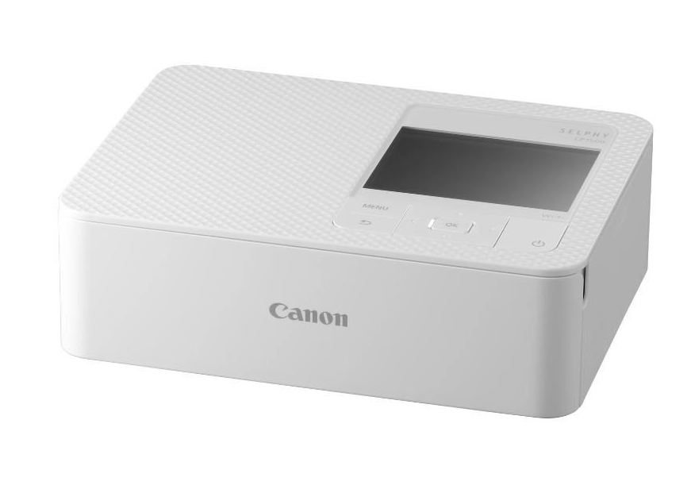

Egy olyan eszköz amely melegítéssel átalakítja a nyomtatási anyagot gáz állapotba, majd az visszaalakulva rögzül a kívánt felületen, például fotópapíron vagy pólón. Ezek a nyomtatók gyakran használatosak fényképek és egyedi tervezésű tárgyak nyomtatására.
